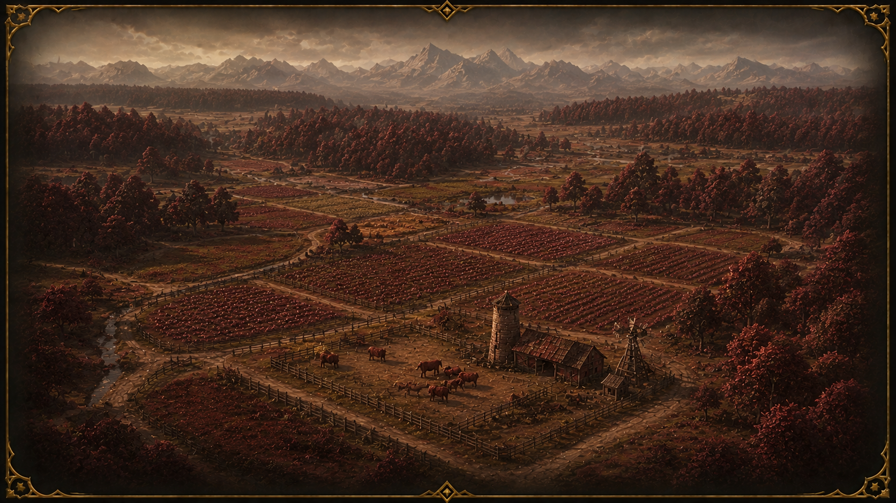

Garnet Fields
The Garnet Fields are a stretch of mineral-rich land where red soil and scattered geysers shape the landscape. Crops here grow faster than anywhere else in Tugarth, making the region quietly valuable.

← BackThe Garnet Fields are a stretch of mineral-rich land where red soil and scattered geysers shape the landscape. Crops here grow faster than anywhere else in Tugarth, making the region quietly valuable.